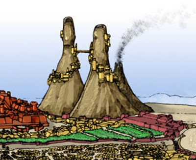

Les Pics des Mages
La légende raconte que le châtiment qui a détruit Tanith-Lenath il y a de cela fort longtemps serait en grande partie dû aux mauvais usages que certains de ses habitants auraient fait d'une puissante magie des arcanes, avec pour conséquence de provoquer le courroux des dieux. À la construction de Laelith sur les ruines de la Cité des Anciens, une loi a donc été rédigée pour contrôler sévèrement l'exercice de la magie des arcanes dans l'enceinte de la cité et même interdire aux mages d'y habiter, leur imposant de s'installer à l'extérieur de l'enceinte de la ville, dans d'anciens volcans que les habitants nomment aujourd'hui les Pics des Mages. En effet, de volcans ils ne gardent de nos jours plus que l'origine, leur silhouette s'apparentant plus à d'immenses pics. La loi s'est toutefois assouplie au fil du temps, et bien que les magiciens et autres ensorceleurs soient toujours vus d'un œil méfiant à Laelith, certains mages reconnus possèdent aujourd'hui de somptueuses demeures sur la Haute Terrasse. Mais cela reste l'exception.
La tour mineure
C'est la plus fréquentée. Haute de prêt de 500 mètres, l'entrée en est un énorme crâne d'une dizaine de mètres de large. La tour mineure abrite notamment la réputée Académie Tolérée de Magie, qui s'étend sur les cinq premiers étages de l'édifice. On y croise en permanence nombre de magiciens de tous niveaux, étudiant ou expérimentant d'énigmatiques sortilèges. Les étages suivants, également appelés strates, sont réservés aux maîtres magiciens. On y accède par un escalier extérieur tournant autour du pic, et plus on s'élève, plus les magiciens qui y habitent sont puissants. La plupart des logements, protégés magiquement, sont creusés dans la paroi du volcan, mais de nombreuses terrasses et tours ont également été construites à l'extérieur, le long de l'escalier. Peu de personnes peuvent se vanter de connaître les derniers étages. Réservés à de puissants magiciens, le seul moyen d'y accéder est d'utiliser la magie. L'escalier s'arrête en effet à la quinzième strate.
La tour majeure
Légèrement plus haute que la tour mineure, la tour majeure est énigmatique. L'accès principal est un pont la reliant à la tour mineure, car aucun accès n'existe au rez-de-chaussé. Dans cette tour vivent les huit archimages des huit écoles de magie (abjuration, invocation, divination, enchantement, évocation, illusion, nécromancie et transmutation) et leurs domestiques, qu'ils ne voient quasiment jamais. Ces magiciens de très hauts niveaux, les plus puissants de toute la région, ne sortent jamais de la tour et passent leur temps à étudier ou concevoir de nouveaux sortilèges. Les affaires du bas monde ne les intéressent guère. Une exception à cette isolation semble toutefois exister, puisque des rumeurs racontent qu'une fois par an ces 8 archimages et les 4 grands prêtres se retrouvent autour du Roi-Dieu dans la salle du trône. Ce qui s'y traite n'a jusque là jamais transpiré.
La tour de l'échec
On appelle également cette tour la tour noire. À la différence des deux autres tours, la tour de l'échec n'est pas construite sur les flancs du volcan, mais à l'intérieur, le transformant ainsi en une sorte de cité troglodyte. Bien moins haute que les deux autres tours, on retrouve ici deux types très différents de magiciens. Les ratés d'une part, ceux qui ont été exclus de la tour mineure pour incompétence ou ceux qui n'ont jamais pu y entrer, les charlatans. Et les rejetés d'autre part, les sorciers, les magiciens noirs, les nécromants mauvais. Ces derniers résident dans la partie supérieure du pic. À mi hauteur de cette tour une porte unique permet de monter aux étages supérieurs. Elle est gardée en permanence par une vingtaine de mercenaires, et il faut montrer « patte noire » pour pouvoir pénétrer dans cette antre de la magie noire. Autant une visite de jour peut se concevoir, autant la nuit la tour devient un vrai coupe-jarret. Les différents cris ou incantations effrayantes que l'on peut y entendre sont réellement terrifiants.
La foire aux enchantements
Entre la tour mineure et la tour de l'échec se tient un marché un peu spécial. Bien que sa fréquentation varie d'une saison à une autre, on y trouve en permanence des composantes de sorts, communs et moins communs, des grimoires, vierges ou avec quelques sorts, des potions magiques, et même de petits animaux qui pourraient servir de cobayes pour de nouvelles expériences. De plus, toutes sortes d'histoires et de légendes, certaines véridiques, d'autres moins, y sont échangées. Cela permet ainsi aux mages de se faire une réputation, chacun y allant de sa dernière aventure ou de sa dernière trouvaille, et permet également de se tenir au courant des activités des grands mages. Cependant, si la foule dans ce campement de toiles est bien entendu composée de nombreux apprentis magiciens, un nombre non négligeable de voleurs s'y infiltre également. Gare à ne pas perdre son acquisition dans les minutes qui suivent l'achat.